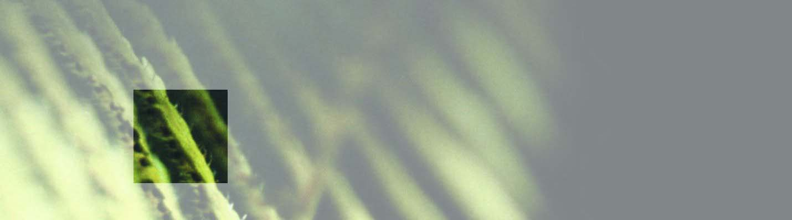
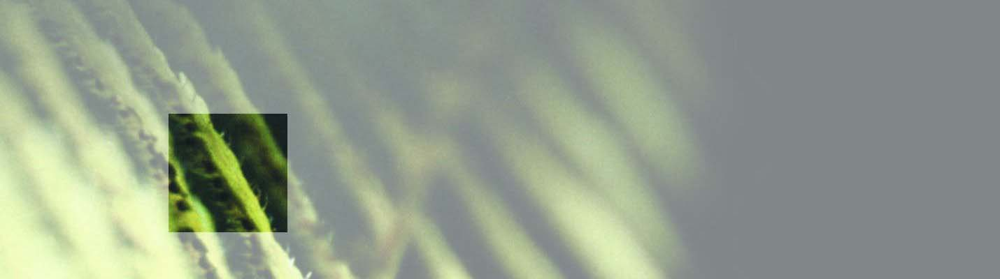

Informationspflicht nach § 5 Telemediengesetz
Verantwortlich für den Inhalt
Dr. med. Petra Paling
Frankfurter Str. 10
97082 Würzburg
Tel: 0931 – 4 52 89 59
Fax: 0931 – 4 52 89 58
Email: petra.paling@arcor.de
Berufsbezeichnung Praktische Ärztin (EWG)
Zusatzbezeichnung Homöopathie
Approbation Bundesrepublik Deutschland
Zuständige Aufsichtsbehörden :
www.aebv-unterfranken.de
www.aekv-wuerzburg.de
Zuständige Ärztekammer:
Bayerische Landesärztekammer: www.blaek.de
Berufsordnung: Berufsordnung
Hinweise zur Nutzung
Die auf den Seiten wiedergegebenen Texte, Bilder und Grafiken dienen ausschließlich der allgemeinen Information des Nutzers. Für Anleitungen, Hinweise, Empfehlungen oder Einschätzungen wird keine Haftung übernommen, wenden Sie sich bitte persönlich an Ihren Arzt.
Dr. Paling übernimmt auch keine Verantwortung für die Richtigkeit und Vollständigkeit der Informationen.
Dr. Paling ist nicht verantwortlich für die Inhalte von Internetseiten, die auf die Praxis verweisen. Dr. Paling ist auch nicht in der Lage, Verweise darauf festzustellen oder zu überprüfen.
Diese Webseite enthält Verweise (Links) auf externe Websites Dritter, auf deren Inhalt und Gestaltung Dr. Paling keinen Einfluss hat und deren Inhalt sich Dr. Paling nicht zu eigen macht. Deshalb kann Dr. Paling für diese fremden Inhalte auch keine Gewähr übernehmen.
Für die Inhalte der verlinkten Webseiten ist stets der jeweilige Anbieter oder Betreiber der Seite verantwortlich. Die verlinkten Seiten wurden zum Zeitpunkt der Verlinkung auf mögliche Rechtsverstöße überprüft. Zu diesem Zeitpunkt waren keine Rechtsverstöße ersichtlich, bei Bekanntwerden wird Dr. Paling diese Links unverzüglich entfernen.
Die Nutzung dieser Webseite ist ohne Angabe personenbezogener Daten möglich.
Wenn Sie Dr. Paling eine Email zukommen lassen, sind alle Angaben, die Sie machen, freiwillig. Ihre übermittelten Daten werden streng vertraulich behandelt und nicht an Dritte weitergegeben. Bitte beachten Sie aber, dass Emails im Internet ungeschützt übertragen werden. Wünschen Sie, dass Ihre Daten nicht für eine weitere Kontaktaufnahme verwendet oder dass sie gelöscht werden, kommt Dr. Paling dieser Aufforderung selbstverständlich nach. Um Ihre Daten zu löschen, senden Sie bitte eine E-Mail an petra.paling@arcor.de.
Der Nutzung von im Rahmen der Impressumspflicht veröffentlichten Kontaktdaten durch Dritte zur Übersendung von nicht ausdrücklich angeforderter Werbung und Informationsmaterialien wird hiermit ausdrücklich widersprochen. Dr. Paling behält sich ausdrücklich rechtliche Schritte im Falle der unverlangten Zusendung von Werbeinformationen, etwa durch Spam-Mails, vor.
© Copyright: Alle Rechte vorbehalten.
 
